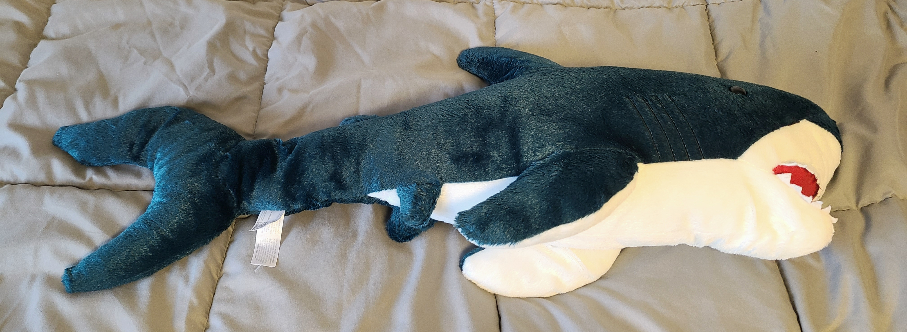
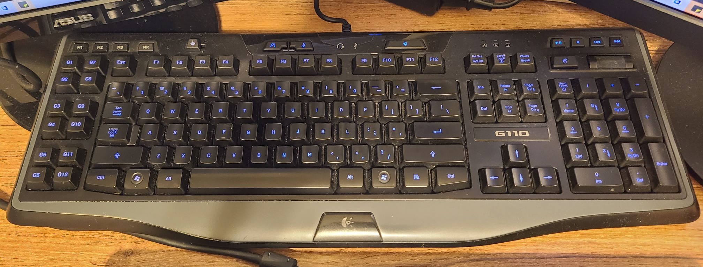

My avatar seen through Instagram, prototyped in Figma. Can be viewed at this link.
Collective Self: Avatar Documentation
Final product
Conceptualization
Conceptual Origins of my Avatar
When the class was brainstorming ideas for what to do for this project, I decided to pull from my past on the internet. One of my most vivid memories growing up on the internet was going on manga websites. I was easily pulled into these black and white fictional worlds, especially since I didn't have access to them normally as a child. This lack of access pulled me in more due to the novelty of the art styles and stories that I would see on these sites, all of which would be very different from the more saturated shows that I grew up watching on cable.
I wanted to reflect on this past online with my personal items in real life since I feel like these stories have influenced some of my personal tastes. However, since I also had to put this work on a platform somehow, I decided to showcase these items on an Instagram story to simulate the experience of walking through a museum. Through this platform, I decided to compound this project with commentary on how my desire for privacy goes against the norm on social media where it's encouraged for someone to have an extended bio or about page.
Development
Developing my Avatar
I developed my avatar in steps:
- Take photos of my personal items
- Draw my items in comic panels
- Add speech bubbles to add personality to my items
- Black out the speech bubbles
- Create "wall text" giving my items titles and a very brief contextual description
- Add my art and wall text to an Instagram story
- Screenshot my Instagram story and move them to Figma for later viewing
I didn't want one item to define my past, so I decided to split my avatar into three items that have great personal importance to me. I also knew I wanted to imitate the black and white art style that I grew up reading on the internet, so after I sketched my general idea on paper, I drew my objects on Clip Studio Paint by using a thin pencil tool. I then cropped my drawings into a comic panel and added a text bubble that I blacked out to reflect the mystery behind these items and their personal stories . To add a little more context as to what was happening, I made a separate canvas that would act as wall text to accompany my items and provide some brief explanation for what these items were and a snippet into their role in my life.



Photo and drawing comparisons.
I added the drawings and wall text into an Instagram story, though I did add a "buffer" image before the drawings to build suspense as you click through the story. For easier viewing, I took screenshots of my Instagram story and moved them into Figma so that the experience could last longer than the 24 hour limit on Instagram.
Prototype flowchart in Figma.
Last thoughts
Conclusions/Reflections
I found this project very difficult due to how conceptual it started out, but I was able to find a foothold by looking to my past on the internet and using a specific art style to customize how my avatar would look. I found the end product to feel very personal yet safe due to it only subsisting of how much information I wanted to give to anyone who was looking on the internet. I feel that I could still add to the tension of my Instagram story since it could be read in a more mysterious or cryptic light in an outsider's point of view because of how I'm purposefully withholding information. However, I feel like I was able to set the atmosphere that I wanted in my work to reflect my past and my wishes to keep my private life private.